Synthetic conversations · Actual extension UI · No real accounts or private chats
Real ChatGPT pages with newly authored public demo conversations; account sidebar and browser chrome excluded.
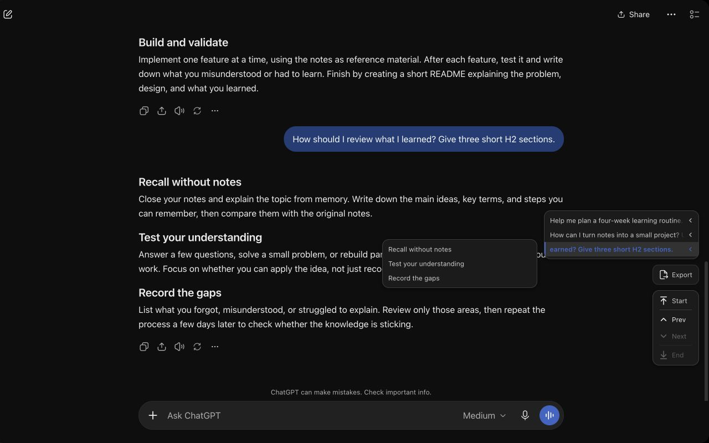
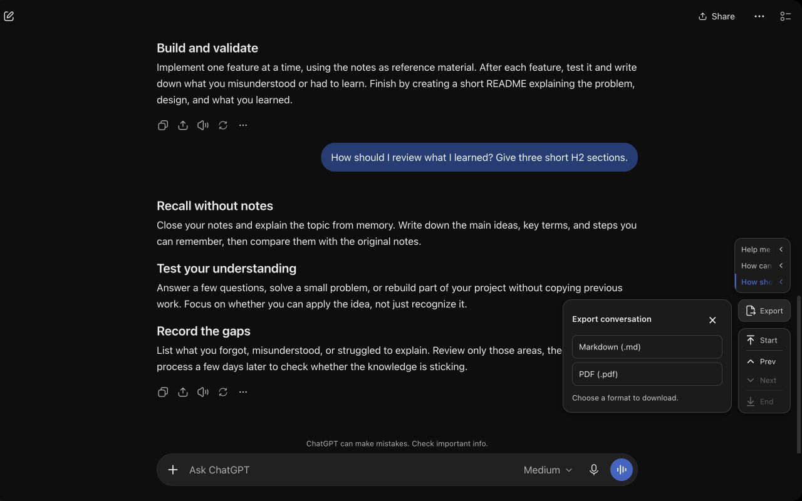
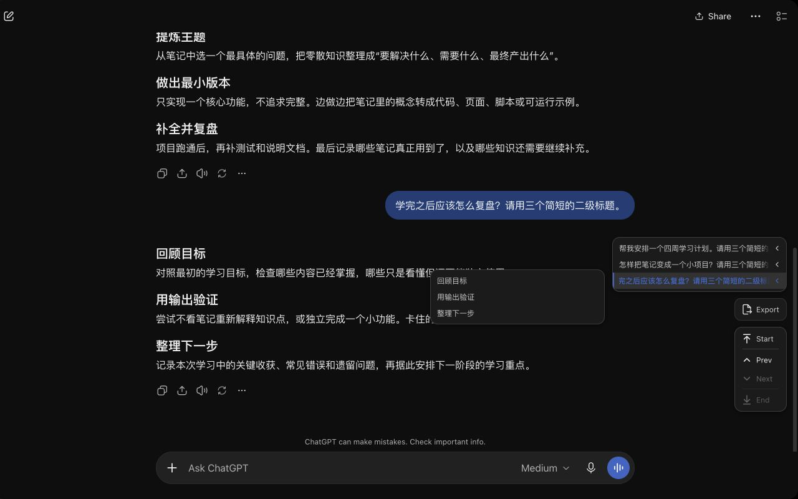
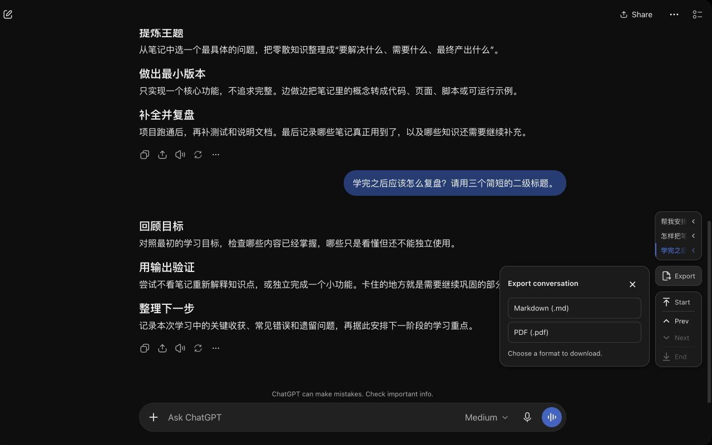
440 × 280
1400 × 560
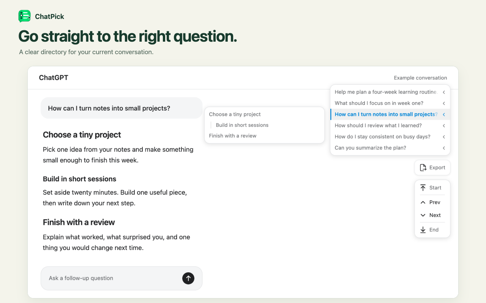
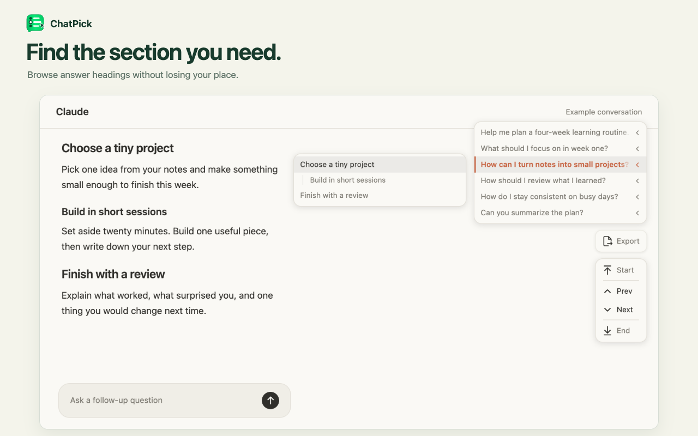
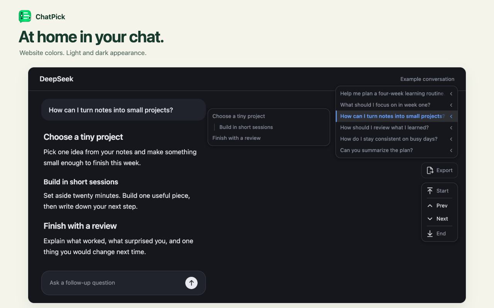
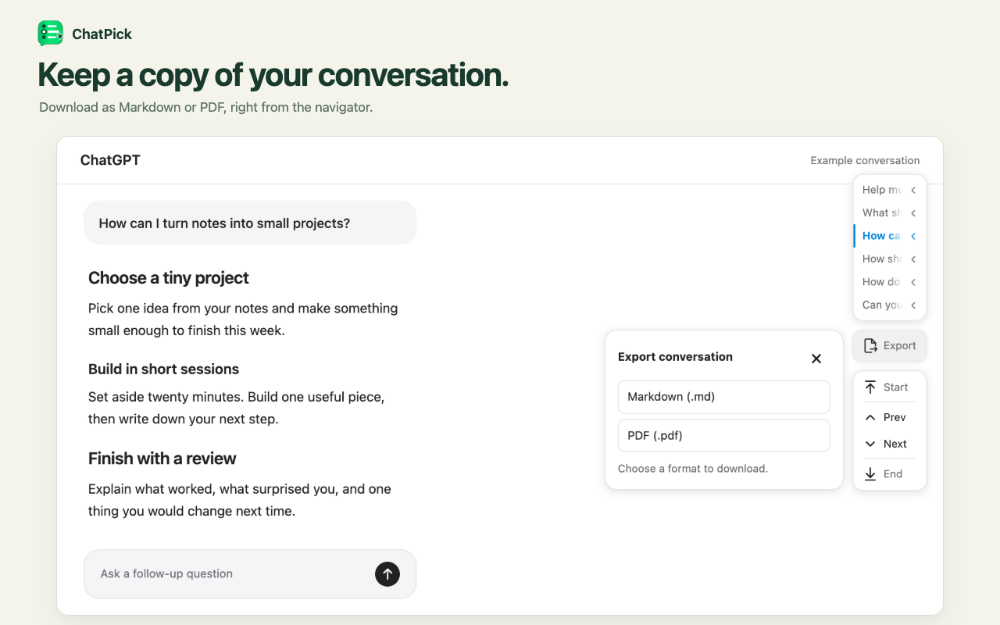
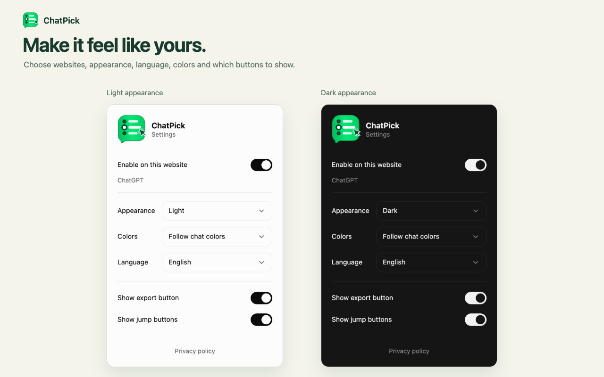
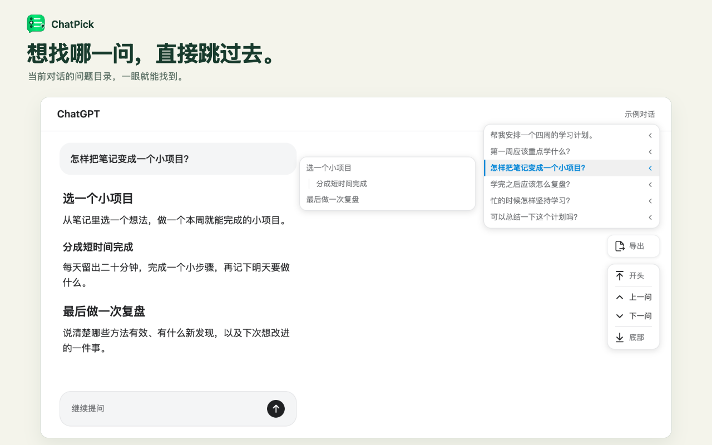
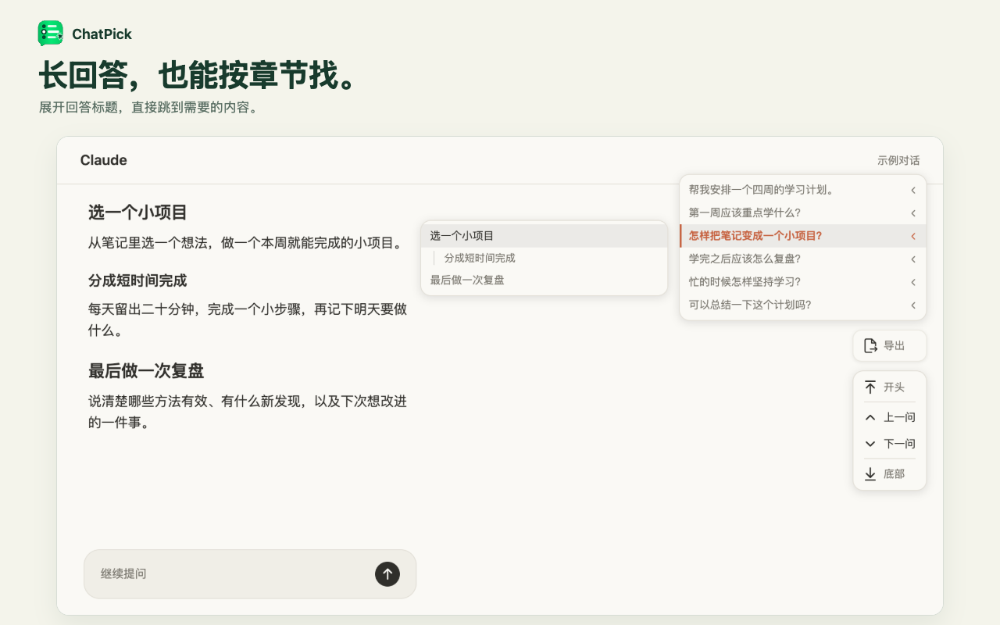
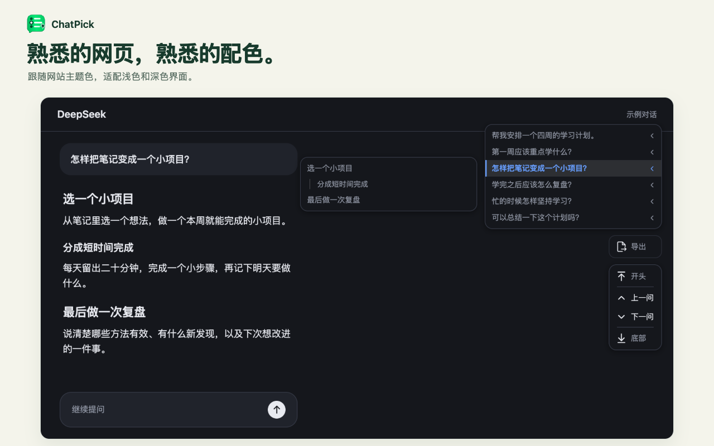
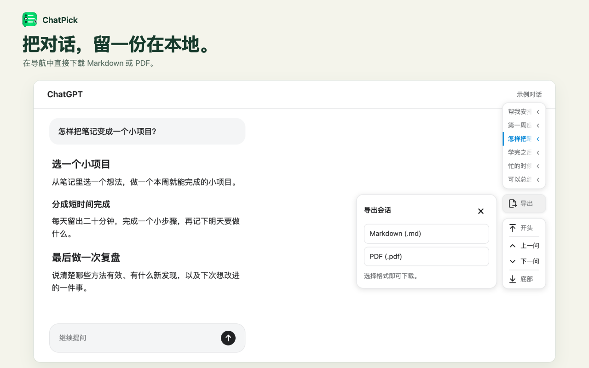
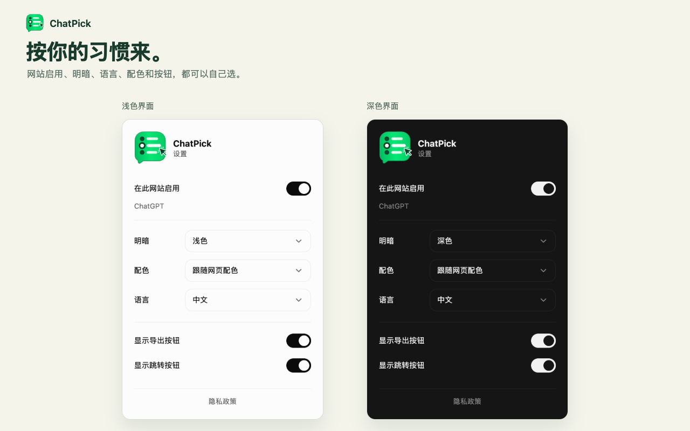